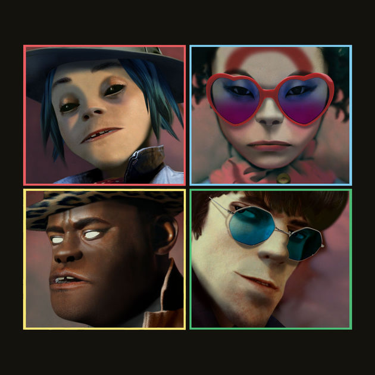

Entitulada como a "Banda Virtual de Mais Sucesso" pelo Guinness World Records, revolucionou a indústria musical com a sua fusão de gêneros e worldbuilding complexos.
Co-criada pelo vocalista Damon Albarn(da banda Blur) e pelo cartunista Jamie Hewlet(dos quadrinhos Tank Girl), a banda colabora com diversos artistas na criação de seus álbuns, sempre optando buscar por sons diferentes do esperado.
Seus álbuns em ordem de lançamento:
Acesse o site oficial da banda: